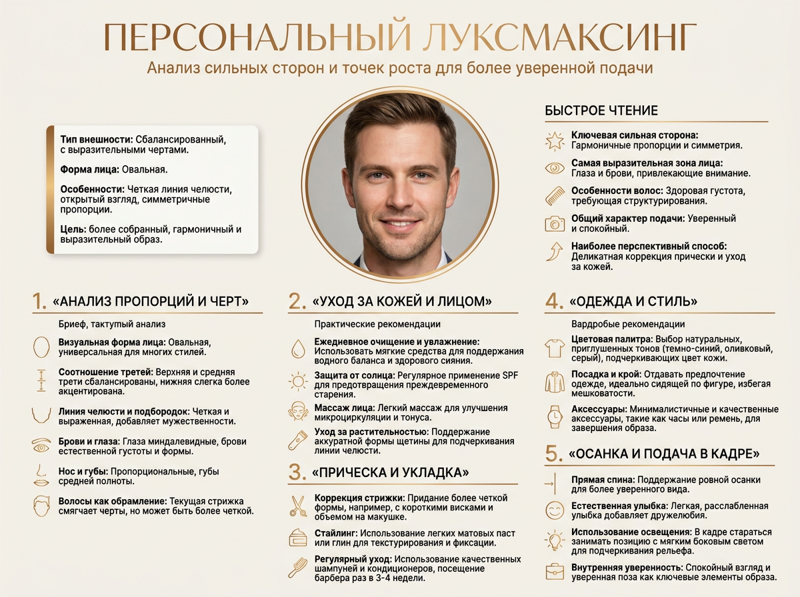
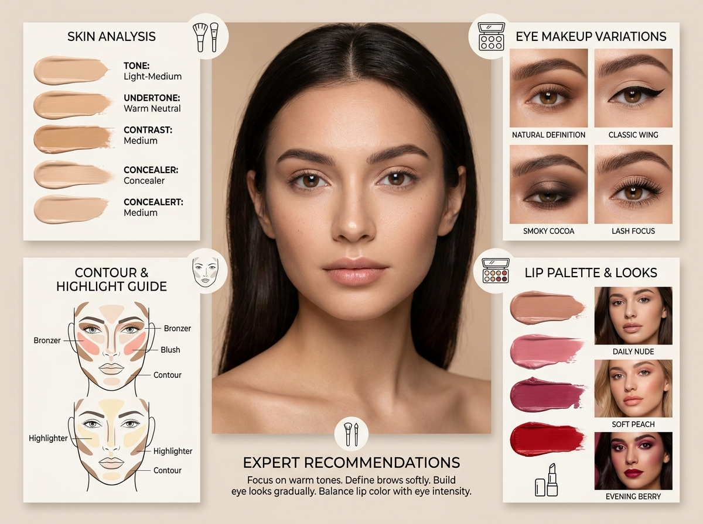
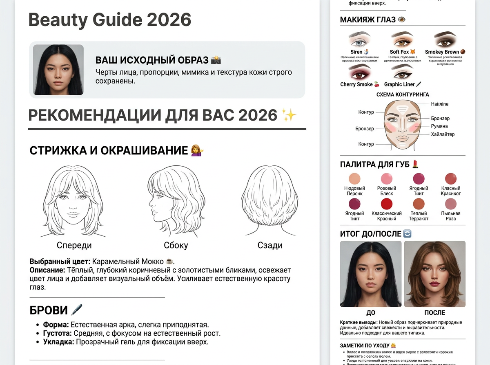
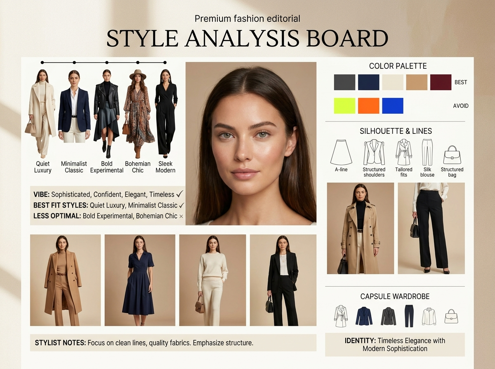
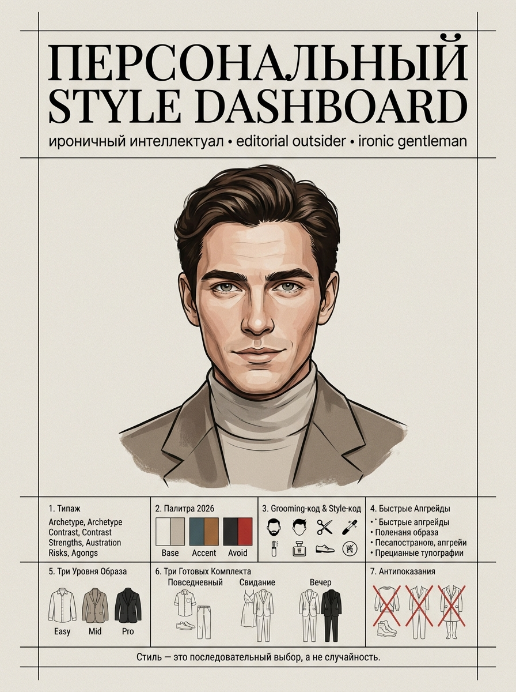
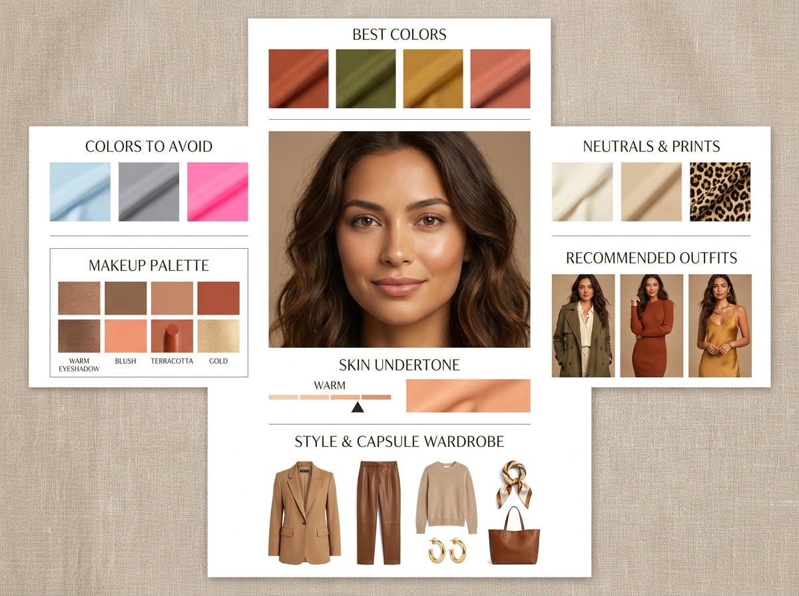

Анализ внешности по фото: 6 промптов для нейросети

Подобрать стрижку, цвет волос, макияж или одежду по фотографии непросто: в зеркале мы видим себя каждый день и часто не замечаем, что именно меняет впечатление от образа. Генерация помогает собрать визуальные варианты и сравнить их в одном стиле.
В подборке - шесть сценариев для анализа внешности по фото: от деликатного луксмаксинга и makeup board до style dashboard, цветовой палитры и подробного beauty-гайда с вариантами стрижек, бровей и макияжа.
Как сгенерировать такое фото: пошагово
Нужен снимок анфас при ровном свете, лицо в кадре целиком, без тёмных очков и головных уборов. Разрешение от 1000 пикселей по короткой стороне. Чем чётче исходник, тем точнее модель повторит черты.
Выберите сценарий ниже и нажмите «Копировать» - текст уйдёт в буфер целиком, вместе с командой сохранения внешности. Эта команда стоит первой строкой и отвечает за то, чтобы на выходе было ваше лицо, а не случайное.
Кнопка «Сгенерировать» рядом с каждым промптом открывает модель в новой вкладке. Nano Banana Pro работает с референсом лица - в отличие от моделей, которые генерируют портрет с нуля и узнаваемость теряют.
Промпт - в поле ввода, портрет - через загрузку референса. Порядок значения не имеет, но без референса команда сохранения внешности работать не будет: модели нечего сохранять.
Для сторис и ленты берите 9:16, для превью и обложек - 4:3. Первый результат редко идеален: если поза или свет ушли не туда, поправьте соответствующую часть промпта и запустите заново. Обычно хватает двух-трёх итераций.
6 промптов для генерации
1. Персональный луксмаксинг
Строго сохранить внешность по загруженному референсу: черты лица, пропорции, мимику и текстуру кожи без изменений. Собери вертикальную премиальную инфографику 3:4 на русском языке под заголовком «ПЕРСОНАЛЬНЫЙ ЛУКСМАКСИНГ», взяв загруженный портрет как главный визуальный референс. Анализируй только то, что действительно видно на фото: особенности кожи, волос, растительности на лице, одежды, осанки, света и подачи в кадре. Не придумывай скрытые характеристики, не оценивай привлекательность и не меняй личность человека. Дай тактичные, реалистичные и выполнимые рекомендации, преимущественно обратимые: уход, укладка, стрижка, оформление бороды или усов, посадка одежды, осанка, ракурс и освещение. Подчеркни сильные стороны внешности. Оформи результат как дорогую editorial-инфографику: светлый бежевый или песочный фон, тонкие золотисто-бронзовые рамки и разделители, крупные узкие заголовки бронзового цвета, основной текст чёрный и хорошо читаемый. Используй ясные блоки, аккуратную сетку, много воздуха и единый мягкий свет.
2. Разбор макияжа и кожи

Строго сохранить внешность по загруженному референсу: черты лица, пропорции, мимику и текстуру кожи без изменений. Разработай композицию «Makeup Analysis Board» в формате премиального бьюти-журнала на основе загруженного портрета. Используй бежевый или айвори фон, тёплый мягко рассеянный свет и фотореалистичную детализированную подачу, чтобы все элементы выглядели снятыми в одной студии. В центре размести естественно улучшенный портрет с сохранённой идентичностью и живой текстурой кожи, без пластиковой ретуши. Рядом добавь блок анализа кожи: визуальные свотчи и подписи с определением тона, подтона и уровня контрастности внешности. Отдельно покажи крупные планы глаз с несколькими гармоничными вариантами макияжа, разными формами подводки и эффектами туши. Добавь небольшие пояснения по оттенкам теней, интенсивности растушёвки и уместности образов. Выдержи стиль дорогой editorial-съёмки: минималистичная типографика, точная модульная сетка, аккуратные подписи, равномерный свет и отсутствие визуального шума.
3. Beauty Guide с преображением

Строго сохранить внешность по загруженному референсу: черты лица, пропорции, мимику и текстуру кожи без изменений. Создай современную инфографику «Beauty Guide 2026» с чёткой журнальной структурой: отдельные блоки, жирные заголовки, горизонтальные разделители, короткие списки и тематические эмодзи. Подбери наиболее выигрышный образ на основе фотографии, допускающий смену цвета волос, стрижки, причёски и макияжа, но без потери узнаваемости человека. Включи раздел «Стрижка и окрашивание» со схемами вида спереди, сбоку и сзади, названием оттенка волос и объяснением его визуального эффекта. Добавь блок «Брови» с формой, плотностью и способом укладки. В разделе «Макияж глаз» покажи пять вариантов: Siren, Soft Fox, Smokey Brown, Cherry Smoke и Graphic Liner. Отдельно размести схему контуринга с зонами контура, бронзера, румян и хайлайтера, а также палитру из шести подходящих оттенков губ. В финале сделай секцию «Итог» с компактным сравнением ДО/ПОСЛЕ и короткими выводами. Дизайн - минималистичный, светлый, редакционный, с чистой типографикой и ясной иерархией.
4. Анализ стиля и аутфитов

Строго сохранить внешность по загруженному референсу: черты лица, пропорции, мимику и текстуру кожи без изменений. Собери «Style Analysis Board» на основе портрета в эстетике премиального fashion-журнала. Выбери чистый бежевый или айвори фон, тёплое рассеянное освещение и единый фотореалистичный свет для портрета и дополнительных образов. В центре размести человека с естественно выровненным тоном кожи, мягким сиянием и сохранённой текстурой. В верхней части покажи серию стилистических трансформаций: сдержанная классика, тихая роскошь, интеллектуальный casual, минималистичный streetwear и расслабленный editorial. Для каждого варианта собери полноценный аутфит с одеждой, обувью, аксессуарами, фактурами и короткой подписью о впечатлении образа. Не превращай человека в другого персонажа: меняй только стилизацию, причёску, цветовые сочетания и детали подачи. Используй аккуратную журнальную типографику, тонкую сетку, много свободного пространства и композицию дорогого editorial-разворота. Все мини-образы должны быть согласованы по масштабу, ракурсу и направлению света.
5. Персональный style dashboard

Строго сохранить внешность по загруженному референсу: черты лица, пропорции, мимику и текстуру кожи без изменений. Проанализируй загруженный портрет и оформи персональный style dashboard как вертикальный fashion-editorial постер формата A4 или 3:4. Используй светлый бумажный фон, строгую сетку, тонкие чёрные линии, много воздуха и ощущение качественной печати. В центре размести стилизованный editorial-аватар на основе лица: точно передай форму глаз, носа, губ, скул, подбородка, тип волос и общий вайб, но избегай мультяшности, 3D-эффекта и карикатуры. Выражение - умное, уверенное, слегка ироничное. Одежда базовая, интеллигентная и стильная, в эстетике editorial outsider и ironic gentleman. Вверху напечатай крупный заголовок «ПЕРСОНАЛЬНЫЙ STYLE DASHBOARD», под ним - строку «ироничный интеллектуал • editorial outsider • ironic gentleman». Внутри постера добавь карточки с подходящими силуэтами, материалами, аксессуарами, цветами, обувью и идеями для повседневных комплектов. Покажи короткие подписи без оценочных суждений, сохрани сдержанную чёрно-белую подачу с отдельными акцентными оттенками.
6. Цветовая палитра внешности

Строго сохранить внешность по загруженному референсу: черты лица, пропорции, мимику и текстуру кожи без изменений. Создай «Color Analysis Board» по загруженному портрету в стилистике дорогого fashion-журнала. Построй композицию на чистом бежевом или айвори фоне с тёплым рассеянным светом, аккуратной типографикой, продуманной сеткой и большим количеством свободного пространства. В центре размести естественно улучшенный портрет: мягко выровняй тон кожи, добавь деликатное сияние, но оставь реалистичную текстуру и узнаваемость. В верхней части покажи блок «лучшие цвета» с текстильными свотчами оттенков, выбранных по видимым особенностям внешности. Рядом укажи определённый подтон кожи в понятном диапазоне - холодный, нейтральный или тёплый - и кратко объясни выбор. Добавь секции с подходящими оттенками волос, металлами украшений, базовыми цветами одежды, акцентами для макияжа и оттенками, которые могут визуально утяжелять образ. Представь палитру крупными образцами с подписями на русском языке. Сохрани единый свет, реалистичные материалы, минимализм и баланс премиальной журнальной инфографики.
Что важно учесть в этом стиле
Анализ по фото работает лучше, когда изображение достаточно резкое, лицо хорошо освещено, а цвет кожи не искажён фильтрами. Для цветовой палитры особенно полезен портрет у окна или при нейтральном студийном свете без яркого макияжа.
Просите нейросеть отделять наблюдения от предположений. Формулировки вроде «видно на снимке» и «можно попробовать» помогают получить рекомендации, а не категоричный вердикт. Любые изменения лучше показывать как варианты, а не как единственно правильный образ.
Идеи для вариаций
- Сделайте отдельные версии для дневного света, вечерней съёмки и офисного образа.
- Попросите сравнить короткую стрижку, среднюю длину и укладку без радикальной смены внешности.
- Добавьте палитру для четырёх сезонов: весна, лето, осень и зима.
- Покажите один комплект в трёх бюджетных категориях без указания конкретных марок.
- Попросите вывести рекомендации в виде карточек, чек-листа или листа с образцами тканей.
Как собрать свой промпт
Начните с формата результата: постер 3:4, лист A4, moodboard или набор карточек. Затем опишите задачу - например, подобрать макияж для нависшего века или собрать палитру одежды - и перечислите блоки, которые должны попасть в композицию.
После этого задайте ограничения: анализировать только видимые признаки, не менять идентичность, сохранять текстуру кожи и использовать единый свет. В конце укажите материалы и технику: мягкий студийный свет, объектив 50 мм, диафрагма f/4, высокая детализация, читаемый русский текст. Если надписи получаются с ошибками, генерируйте изображение без текста, а подписи добавляйте отдельно.
Ошибки, из-за которых кадр не получается
- Слишком много задач в одном листе. Делите сложный dashboard на несколько изображений, иначе модель начнёт смешивать блоки.
- Неуточнённый свет. Разные источники освещения дают несовпадающие оттенки кожи и одежды.
- Запрос на идеальное преображение. Он часто приводит к потере индивидуальных черт и неестественной ретуши.
- Мелкий текст и длинные подписи. Нейросети плохо воспроизводят большие объёмы кириллицы, поэтому оставляйте короткие заголовки.
- Некачественный референс. Размытое селфи, сильный фильтр или закрытое лицо снижают точность анализа.
Частые вопросы
Как сделать такое ИИ-фото бесплатно?
Можно попробовать Kandinsky и Шедеврум, а для некоторых сценариев - Krea AI и Arena.ai. У сервисов отличаются доступность загрузки референса, качество сохранения лица и поддержка текста на русском. Бесплатная генерация может давать очередь, ограничения по числу попыток или заметные ошибки в надписях, поэтому сложную инфографику иногда приходится собирать в несколько этапов.
Какое фото лучше загрузить для анализа внешности?
Берите резкий портрет анфас или в лёгком повороте, снятый при мягком нейтральном свете. Лицо не должно быть закрыто волосами, очками или сильной тенью. Для анализа одежды добавьте кадр по пояс или в полный рост.
Можно ли попросить нейросеть подобрать новую стрижку и цвет волос?
Да, но лучше задавать несколько вариантов и отдельно просить сохранить форму лица, черты и естественную текстуру волос. Для практичного результата уточните длину, допустимость окрашивания и то, сколько времени вы готовы тратить на укладку.
Почему нейросеть ошибается в надписях на инфографике?
Генераторы изображений часто искажают длинные слова, особенно на русском языке. Сократите текст до коротких заголовков, оставьте свободные области под подписи или создайте визуальную основу без текста, а затем добавьте типографику в редакторе.